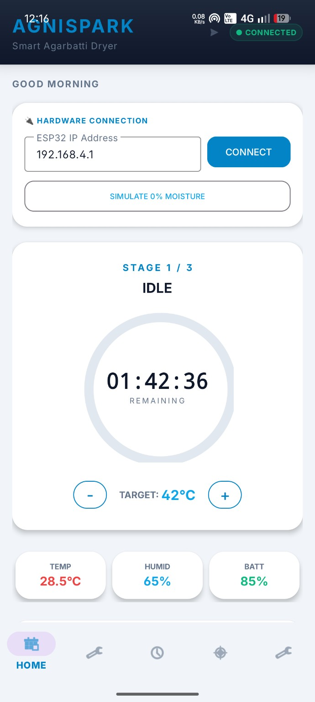
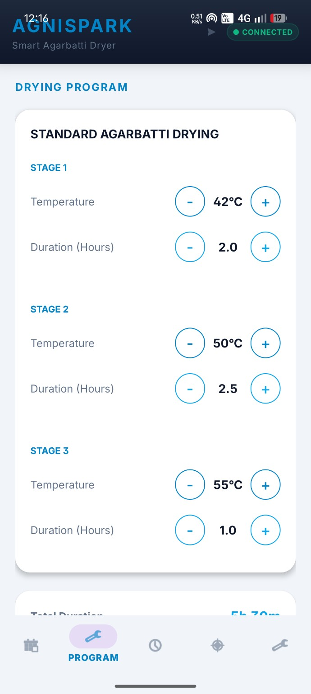
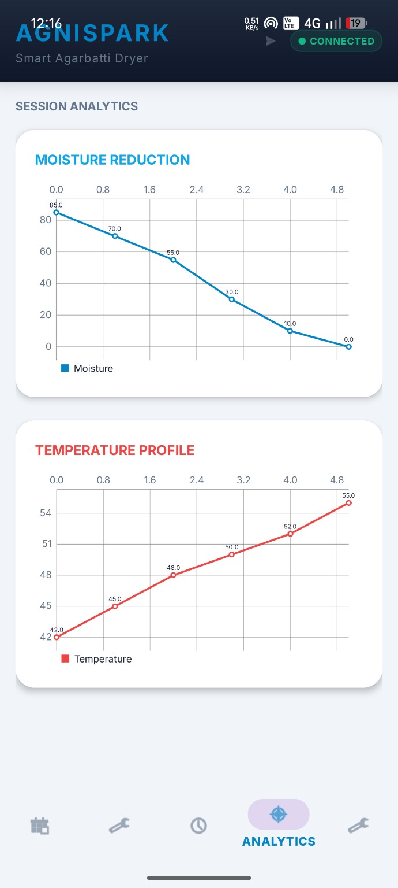

Live monitoring
Home-screen resources include temperature, humidity and moisture values, plus drying status indicators.
AgniSpark is the Android control and monitoring interface found in the uploaded APK, built around a smart agarbatti drying workflow and ESP32 hardware connection.
These are real screenshots from the AgniSpark Android application.



These capabilities are based on screens, resources and code identifiers present in the uploaded APK.
Home-screen resources include temperature, humidity and moisture values, plus drying status indicators.
The APK contains an ESP32 IP-address connection flow and network permissions for communicating with the hardware.
Program and stage controls are present, including start, pause, stop and stage-related drying states.
An Analytics screen includes moisture-reduction and temperature-profile sections, with chart support in the APK.
The application includes a dedicated History activity for previously recorded drying sessions.
Settings, drying-process notifications, heater/fan controls and safety-related status messages are present in the APK.
The website uses the AgniSpark launcher icon supplied with the app and real in-app screenshots provided for the project.
Tap Download APK and wait for the APK file to finish downloading.
Open the downloaded file from your browser or Downloads folder. Android may ask for permission to install from that source.
Allow the requested installation permission if Android shows the prompt, then tap Install.
Important: AgniSpark is an APK distributed outside Google Play on this site. Android may display a security warning. Only install APKs you trust.
No. This site is a download page. The APK is downloaded to the Android device and installed as a native Android application.
The APK contains an ESP32 IP-address connection workflow and hardware-status/drying controls, so the app is designed to work with the associated ESP32-based hardware setup. The website itself does not connect to the ESP32.
Because the APK is not being installed through Google Play, Android may require permission for the browser or file manager to install apps from that source.
The Download button points to downloads/AgniSpark.apk, a relative path that works directly when the folder structure is uploaded unchanged to a static host.
Version 1.0 · Android APK · 7.2 MB